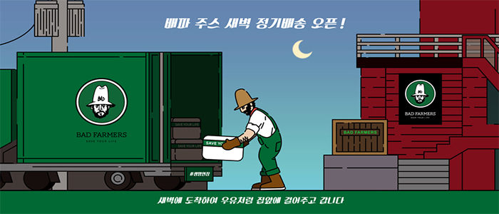
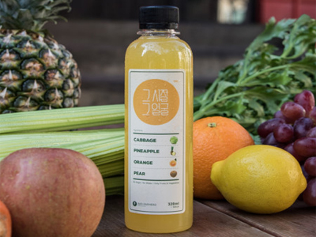

제품 리스트
물건 리스트
-

- 이토록 가벼운 오늘
- 이토록 가벼운 오늘을 만들고 싶다면 비트가 함유된 주스를 아침마다 간편하게 섭취해보자
지난 한 주동안 자신의 열정을 불태우고 남은 잔해들이 있다면 이토록 가벼운 오늘로 주말의 아침을 말끔하게 시작합시다. 적혀구의 활동을 활발하게 도와주는 비트성분이 우리 몸을 빠르게 정화 시켜줄 것입니다.
Order
-
- 살들아 잘 있거라
- /미안하다 내 몸아/에 이은 회개주스 2탄! 배드파머스 주스 중 가장 낮은 칼로리로 주문 즉시 지겹도록 당신을 쫓아다녔던 '살과의 안녕'을 선포할 것입니다.
채소 섭취의 중요성은 알지만 제대로 챙겨먹기 어려운 당신에게 도움을 줄 주스입니다. 6가지의 초록 과채의 환상적인 밸런스로 섭취하기 편하고 당신의 몸은 더욱 가볍게 해줄 것입니다.
Order
-
- 늙지 않아
- 과일 채소만으로 이런 꿈같은 맛을 낼 수 있을까? 아이들도 좋아하는 '늙지 않아'는 달콤 상큼한 블루베리와 딸기와 달착지근한 배, 사과의 맛으로 우울한 기분을 향기롭게 한다.
자연이 아닌 다른 첨가물은 일체 넣지 않았습니다. 5가지의 과일을 품은 늙지 않아는 첨가물로는 따라할 수 없는 오직 과일들만의 어우러짐으로 탄생한 특유의 맛과 색을 자랑합니다.
Order
-

-
- 아주 보통의 하루
- 그런 날 있지 않은가? 지나치게 평범했던 하루. 슬픈 감정도 없고 특별히 기쁜 일도 없는 그런 하루. 어쩌면 이런 아주 보통의 하루가 지치고 삭막한 사회 안에서 가장 행복한 날 아닐까?
당신의 하루를 편안하게 만들어줄 아주 보통의 하루는 당근 베이스에 사과, 파인애플, 오렌지, 유자를 더해 당근 특유의 달콤함과 과일의 상큼함이 돋보이는 주스 입니다.
Order
-

- 미안하다 내 몸아
- 시금치 싫어! 고기 좋아! 하는 사람에게 추천한다. 오렌지와 파인애플의 적절한 조화로 녹색 채소의 향긋함이 배가 되어 그동안 고기로 가득 찬 내 몸에게 미안했다고 사과할지도 모른다.
지난 주말 동안 내몸에 미안했지..? 참담했던 과거를 뒤로 하고 한 주를 다시 시작하자! 케일과 시금치로 몸을 건강하게 정화하고 한 주의 밸런스를 잡아 줍니다.
Order
-

- 그 시절 그 얼굴
- 지난 앨범을 펼쳐보면 그 시절 그 얼굴의 피부가 그립다. 그럴 때는 슬퍼말고 그 시절 그 얼굴을 마시자.
바쁜 현대인들에게 일그러진 식습관으로 망가진 위장에 좋은 양배추를 넣었습니다. 오직 양배추와 과일의 이상적인 배합으로만 양배추 특유의 쌉싸름함은 감추고 그 영양소는 그대로 담아내었습니다.
Order
-
- 깔라만시 클렌즈
- 베트남 현지에서 제품의 우수 여부, 불량 유무를 꼼꼼하게 검수한 배드파머스 깔라만시!
물 한 방울 없이 깔라만시 원액만 짱장하게 담은 100%! 식품안전관리인증(이하 HACCP)을 받아 더욱 안전합니다.
Order